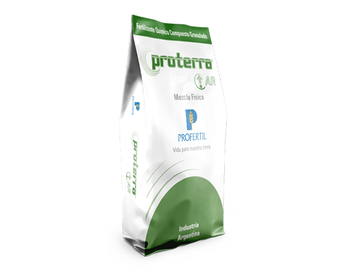
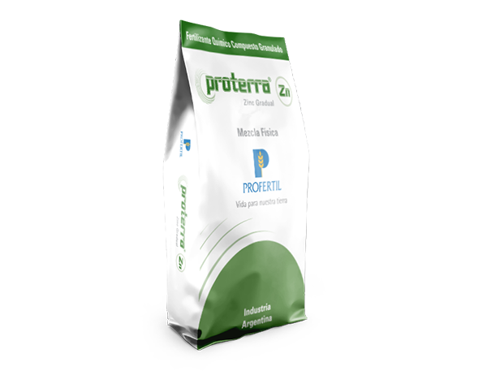

Botón base
Tiza con línea, alto 40, radio 13, con flecha.
Hoy: cierre de la ficha de producto (Otros productos).
Más de la línea Proterra
Ver todos- Proterra S
- Proterra AR

- Proterra Zn

Link de texto
Azul, subrayado celeste, cuerpo chico, con flecha.
Hoy: cierre del visor de la Biblioteca (Más de la Biblioteca).
Más de la línea Proterra
Ver todos los productos- Proterra S
- Proterra AR
- Proterra Zn
Botón principal
Azul con texto tiza, alto 40, con flecha.
Hoy: Ver todo de cada sección en el menú de navegación.
Más de la línea Proterra
Ver todos- Proterra S
- Proterra AR
- Proterra Zn
Botón verde
Verde con texto blanco. En base.css figura como la acción que lleva afuera.
Hoy: volver a ver todo cuando un filtro no deja resultados (Novedades, Sala de prensa, Productos).
Más de la línea Proterra
Ver todos- Proterra S
- Proterra AR
- Proterra Zn
Fila con flecha
Texto azul a lo ancho, con línea arriba y la flecha a la derecha.
Hoy: el final de los resultados del buscador.